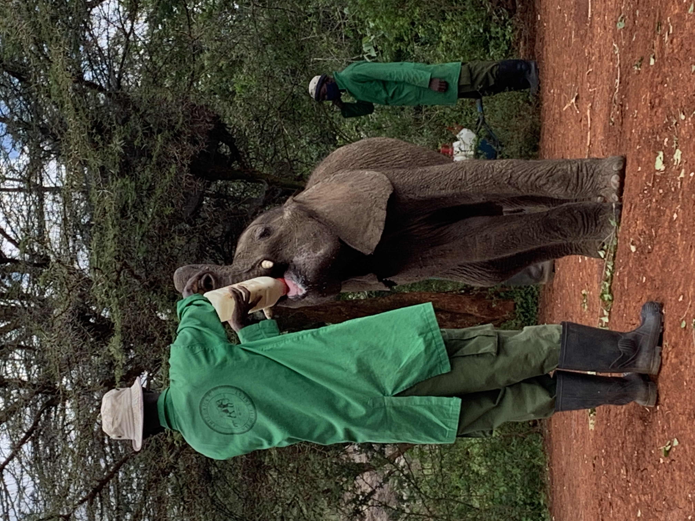
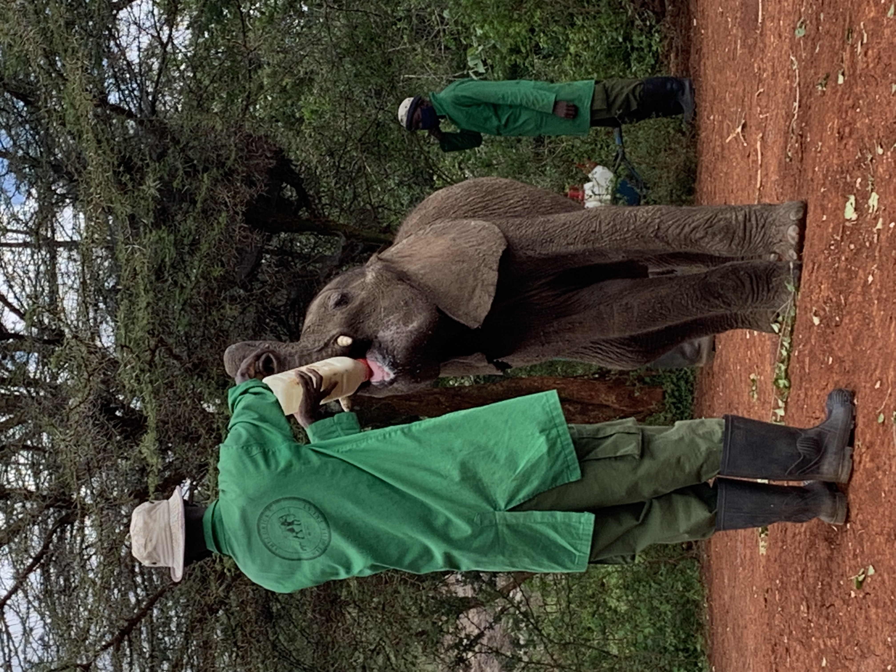

The name "Nairobi" has roots in the Maasai language. It is believed to have been derived from the Maasai phrase "Enkare Nairobi," which translates to "cool water" in English. This name is thought to have referred to the Nairobi River, which flows through the city and was a source of water for Maasai pastoralists. Over time, as the city grew and developed into the capital of Kenya, the name "Nairobi" has become synonymous with the bustling metropolis and cultural hub that it is today.
Nairobi, often referred to as the "Green City in the Sun," is a city that beautifully blends urban life with natural wonders. Nestled within the Great Rift Valley, Nairobi is home to an array of captivating attractions and experiences. Visitors can explore the stunning Nairobi National Park, where wildlife roams freely against the backdrop of the city's skyline. The David Sheldrick Wildlife Trust provides a heartwarming opportunity to get up close and personal with orphaned baby elephants and rhinos. For culture enthusiasts, the Karen Blixen Museum and the Maasai Market offer a glimpse into Kenya's rich heritage. With its thriving art scene, lively music, and a bustling culinary landscape, Nairobi exudes a unique charm that makes it a special destination for travelers seeking an authentic African experience.
 
